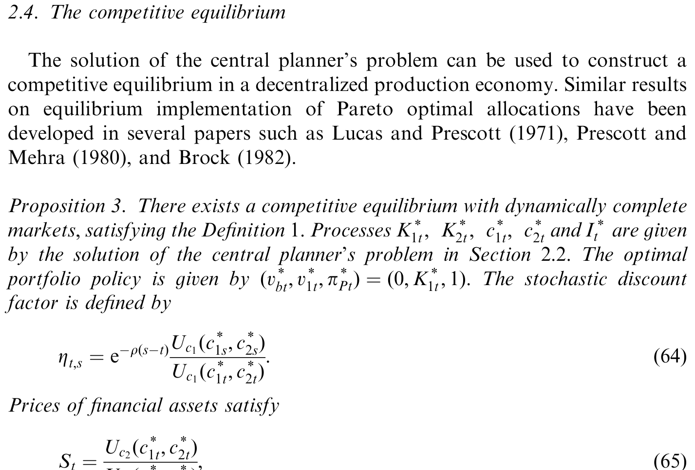
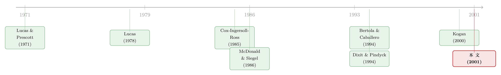

供给会「变软」的经济学：当投资再也收不回来
本文读的是 Kogan (2001, Journal of Financial Economics)：他构造了一个两部门、连续时间的一般均衡生产经济，把「投资一旦投下去就收不回来」这一最朴素的现实写进模型，证明正是这种不可逆性 (irreversibility) 让资产的供给弹性在零与无穷之间内生地游走，从而把股票收益和账面市值比、杠杆这类「实体经济特征」结构性地联系了起来。核心结果是：投资变成一个奇异控制 (singular control) 问题，企业只在 q 撞到一个内生阈值时才投资——而这个阈值，作者用奇异摄动 (singular perturbation) 给出了精度极高的闭式近似。
1 引言：被悄悄写死的「供给侧」
对资产定价稍有了解的人，大概都默认过一件事：资产的供给是固定的。
这件事其实从未被认真讨论过，而是被两篇最有影响力的论文「写死」在了两个极端。Lucas (1978) 假设经济里风险资产的供给完全外生——一棵果树就是一棵果树，结多少果由天定，需求冲击全部由价格来吸收，于是供给弹性等于零。而 Cox, Ingersoll, and Ross (1985)（下称 CIR）走向另一个极端：基础风险资产的供给是完全弹性的，需求冲击对它的价格毫无影响，供给弹性等于无穷。
无论是零还是无穷，供给弹性都是一个常数，而且被先验地钉死了。
这样做当然有它的好处：模型变得无比干净、可解。但代价是，这类模型对「供给如何随时间演化」几乎一无所知，也就谈不上理解实体经济活动与金融资产价格之间的互动。如果我们想知道一家公司的投资决策怎样反过来塑造它的股票收益，Lucas 和 CIR 这两台精密仪器都帮不上忙——因为在它们眼里，公司根本不投资。
接着，一个自然的问题是：能不能让供给弹性自己「活」起来？让它既不是零、也不是无穷，而是由经济基本面内生地决定？
Kogan 的答案是：可以，只要你把一个最不起眼、却最普遍的现实请进模型——投资是不可逆的。
2 不可逆，到底意味着什么
先把直觉讲清楚。所谓不可逆投资，是说一旦资本被装进某个行业，就几乎无法再撤出来变现。半导体工厂的设备、发电厂的机组，都是高度专用化的资产：拆下来卖，能回收的价值微乎其微。
Kogan 把这件事建模成一个两部门 (two-sector) 经济。第一部门代表「经济的其余部分」，技术完全可逆——你可以把资本投进去，也可以随时把它转回消费品或转给第二部门。第二部门才是我们关心的那个行业：它由大量同质的竞争性企业组成，资本一旦从第一部门转入，就再也回不去了。
用资本存量的运动方程写出来，就是论文里的 (1) 和 (2)：
$$dK_{1t} = (aK_{1t} - c_{1t})\,dt + \sigma K_{1t}\,dW_t - dI_t$$
$$dK_{2t} = -\delta K_{2t}\,dt + dI_t$$
这里 \(K_{1t}, K_{2t}\) 是两类资本的存量，\(dI_t\) 是从第一部门转向第二部门的投资。关键在于那个看似不起眼的约束：
$$I_{0-}=0,\qquad dI_t \ge 0.$$
\(dI_t \ge 0\)——投资只能加、不能减。这一行不等式，就是「不可逆」的全部数学内容，也是整篇论文的引擎。它把 \(I_t\) 变成一个非负、不减的奇异过程 (singular process)：大部分时间纹丝不动，只在某些临界时刻「跳」一下。
为什么不可逆这么要命？因为它让第二部门的资本只能往上、不能往下。当行业需求疲软时，企业没法把多余的资本撤走，只能眼看它折旧（速率 \(\delta\)）；而当需求火爆时，企业又会一拥而上把资本灌进来。于是，供给对需求的反应是不对称的——这正是「供给弹性内生变化」的来源。
3 模型：从企业到中央计划者
然后，真正关键的一步在于：怎么求解这样一个经济的均衡？
家庭的偏好是标准的时间可分、等弹性 (isoelastic) 形式（论文 (6) 式）：
$$U(c_1,c_2) = \frac{1}{1-\gamma}c_1^{1-\gamma} + \frac{b}{1-\gamma}c_2^{1-\gamma},\qquad \gamma>0,\ \gamma\neq 1.$$
企业则是一群竞争性的价格接受者，唯一要做的决策就是「何时、投多少」，目标是最大化股价（论文 (3) 式）：
$$\max_{\{I_t\}} \ \mathbb{E}\!\left[\int_0^\infty Z_{0,t} S_t K_{2t}\,dt - \int_0^\infty Z_{0,t}\,dI_t\right].$$
直接在分散经济里求均衡极其困难。但作者用了一个经典而漂亮的处理：沿用 Lucas and Prescott (1971) 的思路，把竞争均衡的配置等价地写成一个中央计划者 (central planner) 的最优化问题——计划者在技术约束下最大化社会总效用，得到的帕累托最优配置，恰好可以被一个动态完备市场的竞争均衡所支撑（论文 Proposition 3）。于是问题就归结为求解：
$$\max_{\{c_{1t},I_t\}} \ \mathbb{E}\!\left[\int_0^\infty e^{-\rho t} U(c_{1t},c_{2t})\,dt\right]$$
受制于 (1)、(2) 以及 \(c_{2t}=XK_{2t}\)（行业产出正比于资本存量，且令 \(X=1\)）和那道不可逆约束 \(dI_t\ge 0\)。
4 奇异控制：投资为什么是「等—等—等—猛投」
这是一个奇异控制问题。它的解，不是一条平滑的投资率曲线，而是把状态空间切成两块：一块「不投资区」，一块「投资边界」。
我们一步步看计划者面临的取舍。考虑值函数 \(J(K_1,K_2)\)。
第一种情形：当前不投资是严格最优的。 这发生在第二部门资本已经相对充裕时。此时哪怕投入一丁点都会降低价值，即 \(J_{K_1}-J_{K_2}>0\)（第一类资本的边际价值高于第二类）。按动态规划原理，在这个区域值函数满足标准的 Hamilton-Jacobi-Bellman (HJB) 方程 \(\rho J - \mathcal{L}J = 0\)，其中（论文 (24) 式）：
$$\mathcal{L}J \equiv \sup_{c\ge 0}\Big\{\tfrac{1}{1-\gamma}c^{1-\gamma} + \tfrac{b}{1-\gamma}K_2^{1-\gamma} + (aK_1-c)J_{K_1} + (-\delta K_2)J_{K_2} + \tfrac{1}{2}\sigma^2 K_1^2 J_{K_1K_1}\Big\}.$$
第二种情形：计划者觉得该投资了。 把一点资本从第一类转成第二类会（至少不）增加价值。第一个不等式 \(J_{K_1}\le J_{K_2}\) 说明非负投资是最优的；而因为计划者可以瞬时转换资本，他会一直转到两类资本的边际价值相等为止——所以在投资发生时严格不等式不可能成立，必有 \(J_{K_1}=J_{K_2}\)。第二个不等式则说，推迟投资是次优的，故 \(\rho J - \mathcal{L}J \ge 0\)。
第三种情形：计划者在「投」与「等」之间无差异，此时 \(J_{K_1}-J_{K_2}=\rho J-\mathcal{L}J=0\)。
把三种情形合在一起，整个问题被压缩成一行优美的微分不等式（论文 (26) 式）。这就是本文的核心方程，我把它的两部分标注出来：
这行方程的美在于：它把「什么时候等、什么时候投」全部编码进了一个 \(\min\) 里。哪一项先触到 0，就由哪一项说了算。投资因此是「等—等—等—猛投」式的：只有当行业对资本的需求高到让 \(q\)（已安装资本的市场价值相对重置成本）触及一个内生阈值时，投资才瞬间发生。由于模型里没有调整成本、且满足完全竞争与规模报酬不变，这里的平均 q 恰好等于边际 q（Hayashi, 1982 的经典结论），所以这个阈值有非常干净的经济含义：市场价值一旦超过重置成本，企业就投。
（关于这套「不可逆投资如何反过来塑造股票波动率与收益」的资产定价含义，正是作者在姊妹篇里展开的，可参见《供给会「变软」的那一刻：不可逆投资如何写出股票的波动节律》。）
5 求解的难处，与那把「摄动」的尺子
于是反转出现了：方程写得这么漂亮，却几乎没法精确求解。绝大多数不可逆投资模型都只能靠复杂的数值计算，闭式解凤毛麟角。
Kogan 的贡献之一，是用奇异摄动 (singular perturbation) 技术，给这个自由边界问题（即那个投资阈值）做出了高精度的闭式近似。直觉上，他把波动率 \(\sigma\) 当作一个小参数，沿着它做渐近展开，逐阶逼近真实的阈值。
这套近似到底准不准？论文用一张表把近似解和数值解逐一对账，结果是近似在很宽的参数范围内都贴得极紧。

Table 1: compares the approximations to the investment threshold with
如表 1 所示，闭式近似对投资阈值的刻画，与「正确答案」（数值解）的偏差非常小——这意味着我们可以绕开繁重的数值计算，直接用一个公式来讨论比较静态：波动率 \(\sigma\) 升高会怎样推高投资阈值（不确定性让企业更愿意等待，这正是实物期权文献的核心直觉），折旧率 \(\delta\)、行业产出率又如何改变企业的投资时点。这把「尺子」让整个模型从「能算」变成了「好用」。
6 文献脉络
把这篇论文放回它的坐标系里，故事会更清楚。
最早的一脉，是确定性环境下的资本不可转移 (capital immobility) 研究——Arrow (1968)、Johansen (1967)、Ryder (1969)、Bose (1970) 等人。他们问的是：当资本无法在部门间自由流动时，最优增长路径长什么样。
接着，文献的重心转向不可逆性与不确定性的互动。一条支线聚焦于「等待的期权价值」：McDonald and Siegel (1986)、Brennan and Schwartz (1985)、Ingersoll and Ross (1987)、Dixit and Pindyck (1994) 指出，不可逆性赋予了企业一份「推迟投资」的期权，从而在面对不确定性时倾向于按兵不动。另一条支线研究单个企业的增量资本积累：Pindyck (1988)、Abel and Eberly (1994) 等，但它们大多把产出价格当作外生。

然后，Pindyck (1993) 点出了一个要害：产出价格本应在均衡中内生决定。这把研究推向第三个分支——竞争性行业的均衡模型，代表作是 Lucas and Prescott (1971)、Leahy (1993)、Caballero and Pindyck (1996)。但真正关键的一步在于：Sargent (1979) 和 Olson (1989) 虽然做了带不可逆投资的一般均衡增长模型，却如 Bertola and Caballero (1994) 所批评的，单部门、总量层面的不可逆约束很少真正绑定——因为总投资波动不够大。
Kogan 这篇论文恰好补上了这块拼图：他用两部门结构把不可逆性放在「单个行业」的层面（而非整个经济），让约束真正咬合；又把它嵌进一个完整的资产定价一般均衡里，从而第一次把「不可逆投资 → 供给弹性内生 → 股票收益与账面市值比/杠杆挂钩」这条因果链打通。它的姊妹篇 Kogan (2000) 则专门去兑现这条链的资产定价含义。
（这条「把实物期权装进竞争均衡」的思路，后来在产业层面被进一步推向带竞争与策略互动的版本，可对照参见《竞争越激烈，反而越要「等」？》。）
7 评论与延伸（Q&A + 研究方向）
（a）几个可能的疑问
Q：这篇论文到底「新」在哪？不就是又一个实物期权模型吗？
不是。实物期权文献（McDonald-Siegel 一脉）大多是局部均衡：把产出价格当外生随机过程，研究单个项目的最优投资时点。Kogan 的关键是一般均衡——产出价格 \(S_t\) 由市场出清内生决定，于是「企业何时投资」和「资产如何定价」是同一个不动点的两面。这才让供给弹性能够内生地在零与无穷之间变化。
Q：为什么要费劲设两个部门？一个部门不行吗？
单部门模型（Sargent 1979、Olson 1989）的问题是总量不可逆约束几乎从不绑定——总投资太平滑了。Bertola and Caballero (1994) 早就指出，不可逆性真正重要的是行业层面。两部门结构正是把不可逆性安放在「一个行业」上，让约束在现实参数下真正起作用，同时保留「经济其余部分可逆」作为干净的对照。
Q：用中央计划者问题代替竞争均衡，会不会偷换了概念？
不会，但这依赖一个条件：市场动态完备。在完备市场下福利定理成立，帕累托最优配置可被竞争均衡支撑（论文 Proposition 3），唯一的随机贴现因子 \(Z_{t,s}\) 把两者对接起来。所以这是一个合法的求解技巧，而非对经济结构的简化。它的代价是：一旦引入市场不完备或异质信念，这条捷径就失效了。
Q：奇异摄动近似可信吗，会不会只是「凑」得好看？
论文用表 1 把近似解和数值解逐一对账，偏差很小，这是诚实的做法。但要注意，近似的精度本质上依赖把 \(\sigma\) 当小参数展开——当波动率很高时，高阶项的贡献会变大，近似可能退化。作者给出的是「在合理参数范围内足够准」，而非「全局精确」。
Q：模型说平均 q 等于边际 q，这个假设强吗？
在本模型里它是结论而非假设——因为同时具备完全竞争、规模报酬不变、零调整成本，Hayashi (1982) 的条件被满足，所以 Tobin 平均 q 恰好等于决定投资的边际 q。但现实中调整成本几乎无处不在，一旦引入，两个 q 就分家了，模型的干净结构也会被打破。
Q：这模型对「账面市值比」「杠杆效应」到底说了什么？
直觉是：当行业资本被「卡」在过高水平（需求刚回落、资本撤不走），企业的市场价值相对重置成本偏低，表现为高账面市值比，同时其股票对冲击更敏感（杠杆效应）。不可逆性把这些「实体特征」和「收益特征」结构性地绑在一起。完整的定价含义在 Kogan (2000) 中兑现，本文聚焦的是均衡与投资行为本身。
（b）几个可能的研究问题与提案
-
把不可逆投资的逻辑搬到公司债与信用利差。 【经济故事】不可逆性意味着资产「撤不出来、卖不掉」，这恰恰是清算价值低、火线甩卖折价大的微观基础。一个高度不可逆的行业，违约时债权人能回收的价值更低，信用利差理应更宽，且对行业需求冲击更敏感。 【可行性】中。结构信用模型（Merton 一脉）已有现成框架，难点在于把「行业层面的不可逆约束」嵌入回收率的状态依赖。数据上可用 Compustat 的资产专用性代理（如行业资产再配置率）+ TRACE 公司债利差做实证检验，识别靠行业间资产专用性的横截面差异。
-
不可逆性与公司债的流动性溢价是否同源？ 【经济故事】「资本撤不出」和「债券卖不掉」在数学上都是某种奇异/单边约束。一个自然猜想是：资产越不可逆的发行人，其债券二级市场流动性也越差（因为基本面本身缺乏弹性），从而流动性溢价与不可逆性正相关。 【可行性】中。需要把资产专用性度量与 TRACE 流动性指标（Amihud、买卖价差、零交易天数）对接，控制评级与久期。识别上可借行业技术冲击作为外生变化。挑战在于厘清「流动性溢价」与「基本面违约溢价」的纠缠。
-
外资持有人会偏好「可逆」还是「不可逆」的行业？ 【经济故事】不可逆投资行业的供给弹性低、对需求冲击更敏感、波动更大。若外资对本地行业的退出选择权更敏感，他们可能系统性地低配高不可逆性行业——这给「外资是不是蝗虫」的争论提供了一个供给侧视角（可对照《外资真是「蝗虫」吗？》）。 【可行性】中偏低。需要跨国持股数据（如 FactSet/Orbis）+ 行业资产专用性度量。识别难点在于外资配置的内生性，可能需要借指数纳入或资本账户开放事件做准实验。
-
把奇异摄动近似推广到带调整成本的混合模型。 【经济故事】现实投资既非完全可逆也非瞬时调整，而是介于两者之间。能否用同一套摄动技术，给「不可逆 + 凸调整成本」的混合模型也找出闭式近似？这将极大提升这类结构模型的可估计性。 【可行性】高（方法论）。纯理论/数值工作，不需新数据，门槛在于摄动展开的技术处理。风险是高阶项可能不再收敛得这么漂亮。
8 我的判断
贡献。这篇论文的价值不在某个惊人的实证数字，而在框架：它优雅地证明了，只要把「不可逆」这一行不等式请进模型，资产供给弹性就不必再被先验地钉死在零或无穷，而是由经济基本面内生决定。两部门结构是点睛之笔——它让不可逆约束在现实参数下真正绑定，回应了 Bertola-Caballero 对总量模型的批评。而奇异摄动近似把一个「只能数值求解」的自由边界问题变成了「可以写公式讨论」的对象，这在方法论上是实打实的推进。
对识别的担忧。这是纯理论文章，谈不上计量识别，但它的「可信度」依赖几根支柱，每一根都值得警惕：完全竞争 + 规模报酬不变 + 零调整成本三件套，是平均 q 等于边际 q 的前提，任何一条松动，模型的干净结构都会塌；偏好被限定为消费品间可分的等弹性形式，这是为了可解而非为了真实；摄动近似的精度在高波动区可能退化。换句话说，这是一个为「可解性」做了大量妥协的基准模型，它的角色是「打地基」，而非「盖完房子」。
后续想看到什么。我最想看到的，是有人把这套框架的资产定价含义拿去和数据硬碰硬：不可逆性强的行业，是不是真的表现出更高的账面市值比、更强的杠杆效应、更敏感的股票波动？Kogan (2000) 开了头，但跨行业、跨国的系统性检验仍然稀缺。其次，是把它从「权益」延伸到「信用」——不可逆性作为低清算价值的微观基础，对信用利差和债券流动性溢价应该有干净的预测，而这片地几乎还没人认真耕过。
参考文献
- Abel, A., Eberly, J. (1994). A unified model of investment under uncertainty. American Economic Review 84, 1369–1384.
- Bertola, G., Caballero, R. (1994). Irreversibility and aggregate investment. Review of Economic Studies 61, 223–246.
- Cox, J., Ingersoll, J., Ross, S. (1985). An intertemporal general equilibrium model of asset prices. Econometrica 53, 363–384.
- Dixit, A., Pindyck, R. (1994). Investment under Uncertainty. Princeton University Press, Princeton, NJ.
- Hayashi, F. (1982). Tobin's marginal q and average q: a neoclassical interpretation. Econometrica 50, 213–224.
- Kogan, L. (2000). Asset prices and irreversible real investment. Unpublished working paper, Wharton School, University of Pennsylvania.
- Kogan, L. (2001). An equilibrium model of irreversible investment. Journal of Financial Economics 62, 201–245.
- Lucas, R. (1978). Asset prices in an exchange economy. Econometrica 46, 1429–1445.
- Lucas, R., Prescott, E. (1971). Investment under uncertainty. Econometrica 39, 659–681.
- McDonald, R., Siegel, D. (1986). The value of waiting to invest. Quarterly Journal of Economics 101, 707–728.
- Pindyck, R. (1988). Irreversible investment, capacity choice, and the value of the firm. American Economic Review 83, 273–277.
- Pindyck, R. (1993). A note on competitive investment under uncertainty. American Economic Review 78, 969–985.
- Sargent, T. (1979). Tobin's Q and the rate of investment in general equilibrium. In: Brunner, K., Metzler, A. (Eds.), On the State of Macroeconomics. North-Holland, Amsterdam, pp. 107–154.
- Shreve, S., Soner, H. (1994). Optimal investment and consumption with transaction costs. Annals of Applied Probability 4, 609–692.
- Tobin, J. (1969). A general equilibrium approach to monetary theory. Journal of Money, Credit and Banking 1, 15–29.